무선설비기사 (2011-05-29 기출문제)
1과목: 디지털 전자회로
1. 교류 입력에 대해 브리지 정류기의 다이오드 동작 조건에 대한 설명으로 적절한 것은?
- 한 개의 다이오드가 순방향 바이어스이다.
- 두 개의 다이오드가 순방향 바이어스이다.
- 모든 다이오드가 순방향 바이어스이다.
- 모든 다이오드가 역방향 바이어스이다.
(정답률: 96%)

2. 정전압 안정화 회로의 규격으로 적절하지 않은 것은?
- 직류 출력전압의 허용범위
- 직류 출력전류의 허용범위
- 입력 및 출력 임피던스의 허용범위
- 부하전류 변화에 따른 출력전압의 변동범위
(정답률: 66%)
3. 부궤환 증폭기의 특징이 아닌 것은?
- 부하변동에 의한 이득변동이 감소한다.
- 일그러짐과 잡음이 감소한다.
- 주파수 특성이 좋다.
- 증폭도가 증가한다.
(정답률: 59%)
4. 다음 회로에서 R의 용도로 가장 적합한 것은?
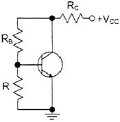
- 전류 부궤환된다.
- 교류 이득이 증가한다.
- 동작점이 안정화 된다.
- 신호 이득을 방지한다.
(정답률: 73%)
5. 다음 회로의 종류는?
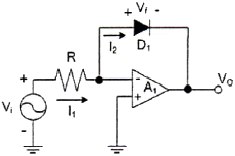
- 반파정류 회로
- 전파정류 회로
- 피크검출기
- 대수증폭기 회로
(정답률: 74%)
6. 발진회로와 증폭회로의 특성을 나타낸 것이다. 적절하지 않은 것은?
- 발진회로와 증폭회로는 적절한 직류전원이 공급되어야 한다.
- 발진회로와 증폭회로 모두 적절한 궤환회로를 적용할 수 있다.
- 발진회로와 증폭회로는 출력파형에 왜곡이 발생할 수 있다.
- 발진회로와 증폭회로는 외부에서 입력되는 교류신호가 필요하다.
(정답률: 59%)
7. 정궤환(positive feedback)을 사용하는 발진회로에서 발진을 위한 궤환루프(feedback loop)의 조건은?
- 궤환루프의 이득은 없고, 위상천이가 180°이다.
- 궤환루프의 이득은 1보다 작고, 위상천이가 90°이다.
- 궤환루프의 이득은 1이고, 위상천이는 0°이다.
- 궤환루프의 이득은 1보다 크고, 위상천이는 180°이다.
(정답률: 87%)
8. 진폭변조에서 변조도에 대한 설명 중 틀린 것은?
- 변조도가 1일 때 신호파가 일그러짐 없이 반송파에 실릴 때의 최대 전력을 가진다.
- 변조도가 1보다 작으면 파형의 일부가 잘려 일그러짐이 생긴다.
- 변조도는 신호파의 진폭과 반송파의 진폭의 비로 나타낸다.
- 변조도가 1보다 큰 경우를 과변조라 한다.
(정답률: 88%)
9. 다음 중 변조방식과 복조방식의 조합이 잘못된 것은?
- FSK - 포락선검파
- DPSK - 동기검파
- QAM - 동기검파
- QPSK - 동기검파
(정답률: 82%)
10. 멀티바이브레이터 회로의 외부에서 가해지는 트리거(trigger) 입력이 없이 스스로 반전하는 회로는?
- 단안정 멀티바이브레이터
- 비안정 멀티바이브레이터
- 쌍안정 멀티바이브레이터
- 슈미터 트리거
(정답률: 47%)
11. 16진수 1A6을 2진수로 표시하면?
- 000100010110
- 000110100110
- 001011001111
- 001101100010
(정답률: 81%)
12. 다음 중 드모르간의 법칙에 해당하는 것은?
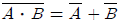
- AㆍB=BㆍA
- Aㆍ(B+C)=AㆍB+AㆍC
- A(A+B)=A
(정답률: 86%)
13. 그레이 코드(Gray Code) 1110을 2진수로 변환하면?
- 1110
- 1100
- 1011
- 0011
(정답률: 95%)
14. 4개의 플립플롭으로 구성된 카운터의 모듈러스(modulus)는 얼마인가?
- 14
- 15
- 16
- 17
(정답률: 87%)
15. 다음 회로는 무엇을 가리키는가?
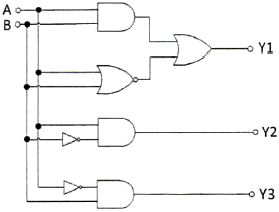
- 비교회로
- 다수결회로
- 일치회로
- 반일치회로
(정답률: 63%)
16. 지연 시간 50[ns]의 플립플롭을 사용한 5단의 리플 카운터가 있다. 카운터의 동작 최고주파수는 얼마인가?
- 1[MHz]
- 4[MHz]
- 10[MHz]
- 20[MHz]
(정답률: 58%)
17. 다음 회로의 명칭은?
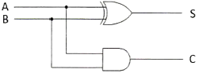
- 반가산기
- 반감산기
- 전가산기
- 전감산기
(정답률: 80%)
18. 그림의 브리지 정류회로에서 부하(RL) 10[Ω]에 평균 직류 출력전압이 10[V]일 때 Diode에 흐르는 피크전류값(Im)은?
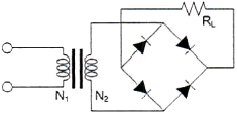
- 0.79[A]
- 1.57[A]
- 1.79[A]
- 3.14[A]
(정답률: 58%)
19. 궤환 증폭기에서 전달이득이 A, 궤환율은 β일 때 |1-βA|=0이었다. 이 때 |βA|=1이면 증폭기의 증폭도는 어떤 동작을 하나?
- 정류
- 부궤환
- 발진
- 증폭
(정답률: 82%)
20. 슈미트 트리거 회로의 출력파형은?
- 방형파
- 정현파
- 삼각파
- 램프파
(정답률: 82%)
2과목: 무선통신 기기
21. PSK 변조방식에서 위상상태의 개수가 증가함에 따라 나타나는 현상은 다음 중 어느 것인가?
- 비트율이 감소한다.
- 보오율이 증가한다.
- 데이터율 증가에 대해서는 BER(bit error rate)을 유지하기 위해 SNR이 증가된다.
- 이득이 증가한다.
(정답률: 89%)
22. 디지털 변조에서 반송파의 형태는 A(t)cos(2πft+p(t))와 같다. 여기서 A는 진폭, f는 주파수, p는 위상을 의미한다. 변조시 크기와 위상 정보를 동시에 이용하는 변조방식은?
- ASK
- QPSK
- QAM
- OQPSK
(정답률: 82%)
23. 다음 중 디지털 변조 방법은?
- PAM
- PCM
- PPM
- PWM
(정답률: 68%)
24. 주파수 90[MHz]의 반송파를 6[kHz]의 정현파 신호로 FM 변조했을 때 최대주파수 편이가 ±76[kHz]이다. 이 때 점유주파수대폭은 몇 [kHz]인가?
- 12[kHz]
- 82[kHz]
- 152[kHz]
- 164[kHz]
(정답률: 86%)
25. OFDM은 어느 변조 방식의 일종이라고 볼 수 있는가?
- M-ary ASK (MASK)
- M-ary FSK (MFSK)
- M-ary PSK (MPSK)
- M-ary QAM (MQAM)
(정답률: 86%)
26. QPSK(Q phase shift keying) 전송 시스템에 관한 신호 성상도를 보이고 있다. 전송 신호의 전력을 높였을 때 신호 성상도는 어떻게 변화되겠는가?
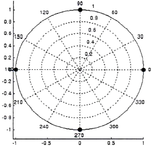
- 신호점들 사이의 각이 좁혀진다.
- 신호점들이 원점에서 멀어진다.
- 신호점들이 오른쪽으로 45도 이동한다.
- 신호점들이 왼쪽으로 45도 이동한다.
(정답률: 92%)
27. 다음 중 레이더 시스템의 구성요소가 아닌 것은?
- 송신기(transmitter)
- 수신기(receiver)
- 안테나(antenna)
- 블랙박스(black box)
(정답률: 97%)
28. 전원회로에서 일반적으로 최대 출력 전류를 얻기 위한 방법으로 적합한 것은?
- 전원 내부저항보다 부하저항이 커야 한다.
- 전원 내부저항보다 부하저항이 작아야 한다.
- 전원 내부저항과 부하저항이 같아야 한다.
- 전원 내부저항이 0이어야 한다.
(정답률: 70%)
29. 납 축전지의 구성으로 맞지 않는 것은?
- 양극판
- 염산액
- 음극판
- 전해액
(정답률: 88%)
30. 전원회로에서 요구하는 일반적인 성능요구 조건으로 부적합한 것은?
- 충분한 전력용량을 가질 것
- 출력 임피던스가 높을 것
- 전압이 안정할 것
- 리플이나 잡음이 적을 것
(정답률: 89%)
31. 다음 중 DC-DC 컨버터의 구성요소가 아닌 것은?
- 구형파 발생기
- 정류회로
- 정전압회로
- 버퍼회로
(정답률: 83%)
32. 정류회로에서 정류효율을 나타낸 식은?
- η = 출력직류전력 / 입력직류전력
- η = 출력직류전력 / 입력교류전력
- η = 출력교류전력 / 입력직류전력
- η = 출력교류전력 / 입력교류전력
(정답률: 83%)
33. 단상 전파 브리지 정류회로에서 각 다이오드에 걸리는 최대 역전압의 크기는? (단, 1차측 입력전압 100[V], 트랜스포머의 권선비는 n1:n2 = 10:1)
- 10[V]
- 14.1[V]
- 100[V]
- 141[V]
(정답률: 88%)
34. 전지의 내부저항을 측정하기 위해 전압계와 전류계를 사용하는 경우, 전압계와 전류계의 내부저항은 전지의 내부저항에 비해 어떻게 되어야 하는가?
- 전압계의 내부저항은 아주 작고 전류계의 내부저항은 아주 커야 한다.
- 전압계의 내부저항은 아주 크고 전류계의 내부저항은 아주 작아야 한다.
- 전압계의 내부저항과 전류계의 내부저항은 아주 커야 한다.
- 전압계의 내부저항과 전류계의 내부저항은 아주 작아야 한다.
(정답률: 76%)
35. 단상 반파 정류회로에서 직류 출력전류의 평균치를 측정하면 어떤 값이 얻어지는가? (단, Im은 입력 교류전류의 최대치이다.)
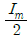
- Im
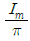
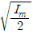
(정답률: 84%)
36. 다음 내용을 나타내는 용어는?
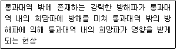
- 스퓨리어스 레스폰스
- 혼변조
- 잡음감도
- 감도 억압효과
(정답률: 68%)
37. 부하시 직류 출력전압이 100[V], 무부하시 직류 출력전압이 120[V]일 때 전압 변동률은 몇 [%]인가?
- 5[%]
- 10[%]
- 15[%]
- 20[%]
(정답률: 95%)
38. AM 수신기에서 수신주파수를 중간주파수로 변환함으로서 근접(인접)주파수 선택도가 향상되는 이유는?
- 낮은 중간주파수로 변환함으로서 이조도(분리도)가 낮아지기 때문이다.
- 낮은 중간주파수에서 Q가 동일한 경우라면 3[dB] 대역폭이 작게되기 때문이다.
- 희망파의 측파대를 제거함과 동시에 리플이 큰 것을 사용하기 때문이다.
- 낮은 중간주파수가 일정하여 대역폭의 특성이 좋지 않은 BFP도 사용할 수 있기 때문이다.
(정답률: 69%)
39. 페이징 기능은 이동통신 단말기에 착신호가 발생하였을 때 단말기가 있는 위치구역의 기지국 제어장치를 통하여 단말기를 호출하는 것이다. 페이징 구역은 단말기가 가장 최근에 등록을 한 위치구역이며 이 정보는 어디에 저장되어 있는가?
- MSC
- VLR
- EIR
- BSC
(정답률: 83%)
40. 무손실 선로에서의 특성 임피던스를 바르게 나타낸 것은?
- C/L
- L/C
- √L/C
- √C/L
(정답률: 72%)
3과목: 안테나 공학
41. 밀리미터파에 해당되는 주파수는?
- 3[GHz]~30[GHz]
- 30[GHz]~300[GHz]
- 300[MHz]~3000[MHz]
- 1[GHz]~15[GHz]
(정답률: 72%)
42. 비유전율(εs)이 1이고 비투자율(μs)이 9인 매질 내를 전파하는 전자파의 속도는 자유공간을 전파할 때와 비교해서 몇 배의 속도가 될까?
- 2배
- 1/2배
- 3배
- 1/3배
(정답률: 92%)
43. 다음 중 포인팅 벡터의 크기를 나타내는 것은? (단, E : 전계의 세기, H : 자계의 세기, μ : 투자율, ε: 유전율)
- EH
- με
- H/E
- √μ/ε
(정답률: 90%)
44. 다음 중 비동조 급전선의 설명으로 옳지 않은 것은?
- 급전선의 길이에는 사용파장과 무관하다.
- 급전선상에 정재파가 없고 진행파만 존재한다.
- 정합장치가 필요하다.
- 전송효율이 동조 급전선보다 나쁘다.
(정답률: 73%)
45. Trap 정합회로(stub 정합)가 잘 사용되는 급전선은?
- 동축케이블 방식
- 차폐 2선식
- 평행 2선식
- 평행 4선식
(정답률: 68%)
46. 다음 중 도파관에 대한 설명으로 옳지 않은 것은?
- 도파관은 차단주파수 이하의 주파수는 통과시키지 않는다.
- 저항손실이 적다.
- TE mode는 진행방향에 대해 전계 E는 나란하고 자계 H는 직각인 파를 말한다.
- 도파관에서는 변위전류의 흐름이 관내에서만 발생하므로 전자파를 외부에 방사하거나 수신하는 일이 없다.
(정답률: 81%)
47. 가장 이상적인 VSWR(정재파비)의 값은?
- 0
- ∞
- 1
- 10
(정답률: 86%)
48. 도파관의 임피던스 정합방법 중 반사파를 흡수하는 방법은?
- 무반사 종단기
- 아이솔레이터
- 테이퍼형 변성기
- 도체봉에 의한 정합
(정답률: 75%)
49. 다음 설명 중 옳지 않은 것은?
- 주엽 - 최대 복사 방향 빔패턴
- 부엽 - 주엽 외의 작은 빔패턴
- 전계패턴 - 최대 전력 복사각도 1/2되는 두 점사이 각도
- 전후방비 - 주엽 전계강도의 최대값과 후방부엽 전계강도의 최대값의 비
(정답률: 88%)
50. 다음 중 안테나 특성을 광대역으로 하기 위한 방법으로 적합하지 않은 것은?
- 안테나의 Q를 적게 한다.
- 진행파 안테나로 한다.
- 안테나 도선의 직경이 가늘어야 한다.
- 자기상사형으로 한다.
(정답률: 75%)
51. 다음 중 슬롯 어레이(Slot Array) 안테나에 대한 설명으로 적합하지 않은 것은?
- 소형 경량이다.
- 전기적 특성이 좋다.
- 고이득이지만 부엽이 많다.
- UHF TV 방송, 선박용 레이더 안테나 등에 사용된다.
(정답률: 73%)
52. Beam 안테나의 이점이 아닌 것은?
- 지향성이 예민하다.
- 단파와 초단파대 저이득
- 송신출력이 적어도 되고 전력이 경제적이다.
- 반파장 안테나 소자를 규칙적으로 배열한다.
(정답률: 65%)
53. 제1종 전리층 감쇠에 대한 설명 중 틀린 것은?
- 전자밀도에 비례한다.
- 굴절률에 비례한다.
- 평균 충돌 횟수에 비례한다.
- 주파수의 제곱에 반비례한다.
(정답률: 58%)
54. 스포라딕(Es) 전리층에 대한 설명으로 틀린 것은?
- E층보다 전자밀도가 높다.
- E층과 거의 같은 높이에 형성된다.
- 발생지역이 광범위하며, 발생주기는 불규칙하다.
- 발생원인이 명백하게 밝혀지지 않고 있다.
(정답률: 65%)
55. 페이딩을 방지하기 위해 둘 이상의 수신 안테나를 서로 다른 장소에 설치하여 두 수신안테나의 출력을 합성하거나 양호한 출력을 선택하여 수신하는 방법이 사용되는 페이딩은?
- 간섭성 페이딩
- 편파성 페이딩
- 흡수성 페이딩
- 선택성 페이딩
(정답률: 80%)
56. 인공잡음의 설명으로 틀린 것은?
- 자동차에서 발생하는 잡음은 점화장치로부터의 잡음이 가장 강하며, 잡음 스펙트럼은 장파(LF)에서부터 극초단파(UHF)까지 광대역 상에 존재한다.
- 소형 정류자 모터를 사용하는 기기로부터 발생하는 잡음 스펙트럼은 장파(LF)에서부터 초단파(VHF)까지 광대역 상에 존재한다.
- 컴퓨터의 클럭 펄스에 의한 잡음 스펙트럼은 기본파만 있고 고조파 성분은 포함하지 않는다.
- 고압 송배전선로에서의 코로나 방전으로 발생한 잡음에 수신 장해를 받는 것은 중파(MF) 대역의 라디오 방송이며, TV 및 FM 방송은 거의 방해를 받지 않는다.
(정답률: 87%)
57. 대지면을 완전도체라고 가정하고, 송수신 안테나의 거리가 충분히 멀리 떨어져 있는 경우, 수평 편파의 송수신 안테나의 높이를 각각 2배 증가시키면 수신 전계강도의 변화는?
- 변화가 없다.
- √2배 증가한다.
- 2배 증가한다.
- 4배 증가한다.
(정답률: 65%)
58. 라디오 덕트를 발생시키는 원인으로 볼 수 없는 것은?
- 육상의 건조한 공기가 해상으로 흘러 들어갈 때
- 야간에 지표면 쪽의 공기가 상층부의 공기보다 빨리 냉각될 때
- 고기압권에서 발생한 하강기류가 해면으로 내려올 때
- 온난기단이 한랭기단 아래쪽으로 끼어들어갈 때
(정답률: 93%)
59. 공전잡음의 종류가 아닌 것은?
- 클릭(click) 잡음
- 그라인더(grinder) 잡음
- 히싱(hissing) 잡음
- 산탄(shot) 잡음
(정답률: 84%)
60. 접지안테나 복사저항이 36.6[Ω]이고, 접지저항이 7[Ω]이며, 그 외의 손실저항이 4[Ω]이다. 안테나 효율은?
- 75.4[%]
- 76.8[%]
- 78.6[%]
- 79.2[%]
(정답률: 67%)
4과목: 무선통신 시스템
61. 다음 중 디지털 통신에서 펄스 성형(pulse shaping)을 하는 주된 이유로 가장 적합한 것은?
- 노이즈를 줄이기 위함
- 다중접속을 용이하게 하기 위함
- 심볼간 간섭(ISI)를 줄이기 위함
- 채널 대역폭을 증가시키기 위함
(정답률: 75%)
62. 단파통신에서 전파의 페이딩 방지책이 아닌 것은?
- 주파수 합성법을 사용한다.
- 공간 다이버시티를 사용한다.
- 지향성이 날카로운 안테나를 사용한다.
- 송신 주파수를 높인다.
(정답률: 58%)
63. AM 송신기에서 부궤환 방식을 채용하여 얻어지는 특성이 아닌 것은?
- 이득향상
- 잡음감소
- 주파수특성 개선
- 발진주파수 개선
(정답률: 47%)
64. 다음 중 지표파에서 가장 중요한 전파 전파특성을 가지는 주파수 대역은 어느 대역인가?
- 극초단파대
- 초단파대
- 단파대
- 장파, 중파대
(정답률: 67%)
65. 위성과 지구국의 위치를 이용해 궤도 역학으로부터 지연(Delay)을 계산하여 동기(Sync)를 맞추는 망동기 방식은?
- Local Loop Control 방식
- Remote Loop Control 방식
- Open Loop Control 방식
- Close Loop Control 방식
(정답률: 75%)
66. PCM 다중통신에서 발생하는 지터(Jitter) 현상에 대한 설명으로 잘못된 것은?
- 펄스열이 왜곡되어 타이밍 펄스가 흔들려서 발생한다.
- 타이밍 회로의 동조가 부정확하여 발생한다.
- 타이밍 편차 또는 지터 잡음이라 한다.
- 양자화 오차에서 발생되는 잡음이다.
(정답률: 80%)
67. OFDM(Orthogonal Frequency Division Multiplexing) 방식의 설명으로 틀린 것은?
- 다중 반송파 변조라고도 한다.
- 다중경로 환경에서 심볼간 간섭(ISI)의 영향을 받는다.
- 일반적으로 직교위상편이변조(QPSK)가 사용된다.
- 다른 주파수에서 다수의 반송파 신호를 사용하여 각 채널상에 비트를 실어 보낸다.
(정답률: 79%)
68. 다음 중 Bluetooth에 대한 설명으로 틀린 것은 무엇인가?
- ISM(Industrial Scientific and Medical) 대역에서 사용한다.
- 간섭과 페이딩에 저항하기 위하여 Direct Sequence 기술을 사용한다.
- TDD(Time Division Duplex) 기술을 사용한다.
- 비동기 데이터채널과 동기 음성채널을 동시에 제공 가능하다.
(정답률: 75%)
69. 다음 중 주파수 확산 기법을 사용하는 CDMA 방식의 특징으로 틀린 것은 무엇인가?
- TDMA 혹은 FDMA보다 낮은 C/N에서도 동작한다.
- 통화 채널당 통화자 수에 대한 이론적인 제한은 없다.
- 채널 상호간의 간섭이 한정되어 주파수 재사용률이 좋다.
- 가입자가 증가하여도 서비스 품질이 떨어지지 않는다.
(정답률: 70%)
70. IS-95 CDMA 이동통신 시스템에서 왈시 코드(Walsh code) W0를 사용하는 채널은?
- Pilot(파일롯) 채널
- Paging(호출) 채널
- Synch(동기) 채널
- Traffic(통화) 채널
(정답률: 71%)
71. 다음 중 전송속도가 상대적으로 가장 빠른 통신 표준은?
- IEEE 802.11n
- IEEE 802.15.4a
- HSDPA
- 1x EV DO rev.A
(정답률: 75%)
72. 다음 중 프로토콜이 수행하는 임무가 아닌 것은?
- 송신 시스템에서 통신경로를 활성화시키거나 통신하기를 원하는 목표 시스템의 정보를 통신망으로 알려준다.
- 수신 시스템이 데이터를 수신할 준비가 되었는지 송신 시스템이 확인한다.
- 송신 시스템의 파일전달 어플리케이션이 수신 시스템의 파일 관리 프로그램의 특정 사용자 파일 관리를 확인한다.
- 송신 시스템과 수신 시스템 사이의 상호운용성을 확인한다.
(정답률: 63%)
73. 다음 중 TCP/IP 프로토콜의 계층별 기능을 옳게 연결한 것은?
- IP 계층 - 통신전담 프로세서간의 네트워크를 통한 패킷교환
- 응용 프로세스 계층 - 호스트간의 정보 교환 및 관리
- 전달 계층(TCP/UDP) - 응용 프로세스간의 응용 서비스 제공
- 네트워크 접속 계층 - 논리적인 계층 연결
(정답률: 61%)
74. 프로토콜에 대한 아래의 설명 중에서 잘못된 것은?
- 통신하려는 상대방과 미리 정해진 약속을 프로토콜이라고 한다.
- 통신이 이루어지기 위해서는 상위와 하위 레벨 사이의 프로토콜이 일치되어야 한다.
- 통신규약이라고도 한다.
- 프로토콜은 자신과 상대방의 동일한 레벨 사이에 적용된다.
(정답률: 64%)
75. 다음 중 통신분야의 표준화 기구가 아닌 것은?
- ETSI
- 3GPP
- ANSI
- ATIS
(정답률: 80%)
76. OSI 참조모델에서 전송제어, 흐름제어, 오류제어 등의 역할을 수행하는 계층은?
- 세션 계층
- 네트워크 계층
- 물리 계층
- 데이터링크 계층
(정답률: 84%)
77. 무선 LAN의 특성에 해당하지 않는 것은?
- 전파를 이용해 데이터를 송수신
- 배선으로부터 해방
- 단말기 설치의 자유도 향상
- 공간을 초월한 통신 방식
(정답률: 86%)
78. 통신망관리 3대 기능에 해당하지 않는 것은? (문제 오류로 실제 시험에서는 모두 정답처리 되었습니다. 여기서는 1번을 누르면 정답 처리 됩니다.)
- 장애관리 기능
- 성능관리 기능
- 구성관리 기능
- 보안관리 기능
(정답률: 74%)
79. 3단 증폭회로에서 각 단위 증폭도를 각각 G1, G2, G3라 하고 잡음지수를 F1, F2, F3라 하면 종합잡음지수(F)의 식은?
- F =F1+G1+F2G2+F3G3
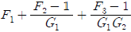
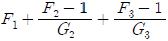
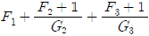
(정답률: 74%)
80. 백색 가우시안 잡음의 특징으로 틀린 것은?
- 전대역에 걸쳐 전력 스펙트럼 밀도가 일정한 크기를 가진다.
- 백색 가우시안 잡음은 신호에 더해지는 형태다.
- 열잡음(thermal noise)이 대표적인 백색 가우시안 잡음이다.
- 레일리 분포 특성을 보인다.
(정답률: 84%)
5과목: 전자계산기 일반 및 무선설비기준
81. 다음 마이크로프로세서의 명령인출 과정을 올바르게 나열한 것은?
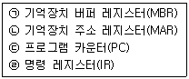
- IR → MBR → MAR → PC
- PC → MBR → MAR → IR
- PC → MAR → MBR → IR
- IR → MAR → MBR → PC
(정답률: 70%)
82. 제어장치(control unit)를 마이크로프로그래밍(microprogramming)으로 구현하였을 때 하드와이어(hardwired) 제어장치보다 장점이 아닌 것은?
- 제어 속도가 빠르다.
- 제어 장치의 설계를 단순화할 수 있다.
- 오류 발생률이 낮다.
- 구현 비용이 적게 든다.
(정답률: 73%)
83. 다음 출력 장치들 중 인쇄활자를 이용하는 것은 무엇인가?
- 라인 프린터(line printer)
- 도트 매트릭스 프린터(dot matrix printer)
- 레이저 프린터(laser printer)
- 잉크젯 프린터(inkjet printer)
(정답률: 59%)
84. 대기 중인 프로세서가 요청한 자원들이 다른 대기 중인 프로세스에 의해서 점유되어 다시 프로세스 상태를 변경시킬 수 없는 경우가 발생하게 되는데 이러한 상황을 무엇이라 하는가?
- 한계 버퍼 문제
- 교착상태
- 페이지 부재상태
- 스래싱(Thrashing)
(정답률: 89%)
85. 인터럽트 수행과정 중, CPU 내부에 있는 특수 목적용 레지스터들 가운데 하나로, 원래의 프로세스가 수행될 수 있도록 프로그램 카운터의 주소를 임시로 저장하는 레지스터를 무엇이라 하는가?
- 명령 레지스터
- 기억장치 주소 레지스터
- 기억장치 버퍼 레지스터
- 스택 포인터
(정답률: 70%)
86. 주소영역(address space)이 1[GB]인 컴퓨터가 있다. 이 컴퓨터의 MAR(memory address register)의 크기는 얼마인가?
- 30비트
- 30바이트
- 32비트
- 32바이트
(정답률: 79%)
87. 운영체제가 추구하는 목적의 짝이 제대로 지어진 것은?
- 사용자의 독점성과 자원의 효율적 이용
- 사용자의 편리성과 자원의 독점적 이용
- 사용자의 독점성과 자원의 독점적 이용
- 사용자의 편리성과 자원의 효율적 이용
(정답률: 90%)
88. 다음 지문은 운영체제의 4가지 목적 중 한가지를 설명한 것이다. 어떠한 것에 대한 설명인가?
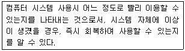
- 응답시간의 단축
- 처리능력 향상
- 사용가능성
- 자원스케줄링 기능
(정답률: 55%)
89. 다음 보기의 기억장치들을 속도로 가장 빠른 것에서 느린 순서대로 나열하고 있는 것은?
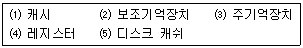
- ⑷-⑶-⑴-⑸-⑵
- ⑷-⑸-⑶-⑴-⑵
- ⑷-⑴-⑶-⑸-⑵
- ⑷-⑸-⑴-⑶-⑵
(정답률: 88%)
90. 가상 기억장치 구현방법의 한 가지로, 기억장치를 동일한 크기의 페이지 단위로 나누고 페이지 단위로 주소변환 및 대체를 하는 방식은?
- 논리 메모리 분할 기법
- 페이징 기법
- 스케줄링 기법
- 세그먼테이션 기법
(정답률: 89%)
91. 다음 중 무선국의 개설허가시 심사하는 사항이 아닌 것은?
- 주파수지정이 가능한지 여부
- 무선설비가 기술기준에 적합한지 여부
- 재허가가 가능한지 여부
- 무선종사자의 배치계획이 자격ㆍ정원배치기준에 적합한지 여부
(정답률: 85%)
92. 전파형식의 표시 "16K0G3EJN"에서 기호 및 문자의 설명이 틀린 것은?
- 16K0는 필요주파수대폭을 나타냄
- G는 주반송파가 위상변조된 발사전파를 나타냄
- 3은 주반송파를 변조시키는 신호특성이 아날로그 정보를 포함하는 단일채널을 나타냄
- E는 송신할 정보의 전신 형태를 나타냄
(정답률: 74%)
93. 전파를 이용하여 모든 종류의 기호ㆍ신호ㆍ문언ㆍ영상ㆍ음향 등의 정보를 보내거나 받는 것을 무엇이라 하는가?
- 유무선통신
- 무선설비
- 무선통신
- 유선통신
(정답률: 87%)
94. 주파수할당대가의 산정 및 부과에 관한 세부사항은 누가 정하여 고시하는가?
- 한국방송통신전파진흥원장
- 중앙전파관리소장
- 방송통신위원회
- 지식경제부장관
(정답률: 47%)
95. 전파법에 따라 적합성평가를 받은 기자재가 적합성평가 기준대로 조사 또는 시험하는 행위는 다음 중 어느 것에 해당되는가?
- 사전관리
- 사후관리
- 인증관리
- 기기관리
(정답률: 75%)
96. 공중선에 공급되는 전력과 등방성 공중선에 대한 임의의 방향에 있어서의 공중선이득의 곱을 의미하는 전력은?
- 반송파전력(PZ)
- 등가등방복사전력(EIRP)
- 규격전력(PR)
- 평균전력(PY)
(정답률: 79%)
97. 우주국과 통신을 하기 위하여 지구에 개설한 무선국은?
- 우주국
- 위성국
- 지구국
- 지구우주국
(정답률: 90%)
98. 다음 사항 중 위탁운용 또는 공동사용할 수 있는 무선설비에 해당되지 않는 것은?
- 송신설비 및 수신설비
- 방송통신위원회가 정하는 실험국의 무선설비
- 무선국의 공중선주
- 시설자가 동일한 무선국의 무선설비
(정답률: 58%)
99. 항공기가 활주로에 착륙을 하고자 할 때 활주로로부터 떨어진 거리정보를 항공기에 제공하는 무선설비를 무엇이라 하는가?
- 로컬라이저(Localizer)
- 글라이드패스(Glide pass)
- 마커비콘(Marker beacon)
- 계기착륙시설(ILS)
(정답률: 70%)
100. 무선설비의 기술기준에 있어서 공중선계가 충족하지 않아도 되는 것은?
- 공중선 이득이 높을 것
- 신호의 반사손실이 최소화 되도록 할 것
- 신호의 흡수손실이 최소화 되도록 할 것
- 지향성은 복사되는 전력이 목표하는 방향을 벗어나지 않도록 안정적일 것
(정답률: 62%)